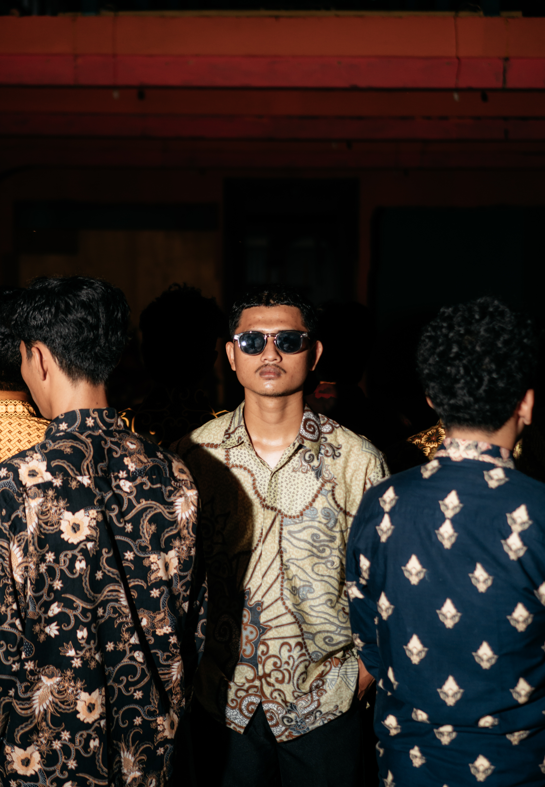
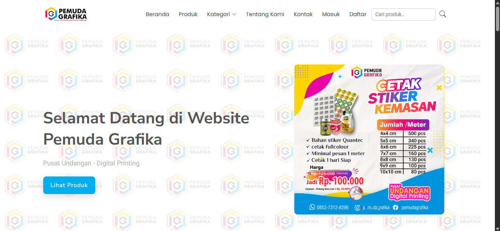
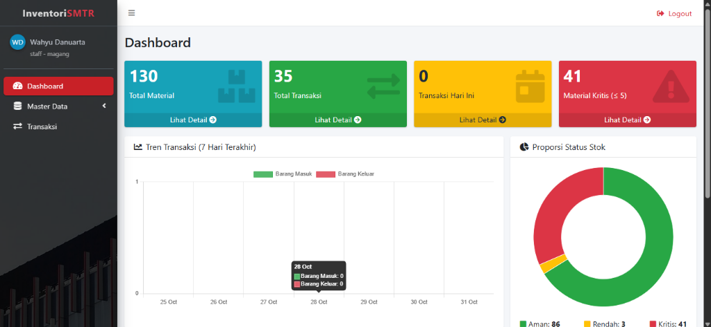
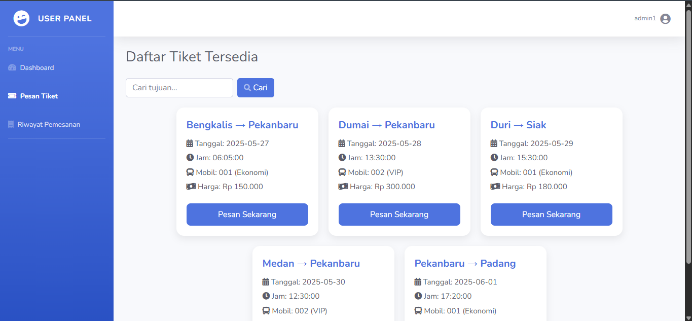
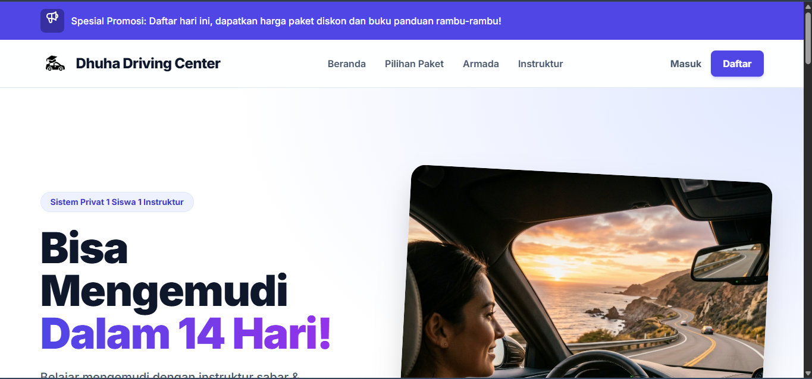

Tersedia untuk Peluang Kerja (Full-time & Magang)
Halo Dunia! Saya
Wahyu Danuarta
Saya seorang
Software Engineer & Full Stack Web Developer yang berfokus membangun aplikasi web berkinerja tinggi dengan penerapan keamanan sistem informasi, perlindungan data, serta antarmuka modern yang intuitif dan responsif.
Tech Stack Utama:
PHP / Laravel
Web Security (OWASP)
PDF Regex Engine
MySQL
JavaScript (ES6+)
Docker
wahyu@workspace ~ developer.profile
ONLINE

const developer = {
name: 'Wahyu Danuarta',
role: 'Full Stack Web Dev',
focus: ['Web', 'Cyber Security'],
stack: ['Laravel', 'PHP', 'MySQL'],
status: 'Open to Work 🚀'
};
Tentang Saya
Dedikasi Membangun Solusi Nyata
Mengkombinasikan keandalan backend, perhatian pada keamanan sistem informasi, dan estetika antarmuka modern yang memanjakan pengguna.
Rekayasa Web & Keamanan Sistem Informasi
Lulusan D4 Keamanan Sistem Informasi Politeknik Negeri Bengkalis (IPK 3.63) dengan keahlian komprehensif dalam rekayasa aplikasi web modern, keamanan siber, dan administrasi jaringan. Tersertifikasi BNSP (Junior Network Administrator) dan MikroTik (MTCNA), serta peraih penghargaan nasional Best Spirit Keamanan Siber KMIPN VI 2024 di Politeknik Negeri Jakarta.
Berpengalaman magang di PT. Telkom Akses Riau Daratan (Divisi Inventory & Asset Management), di mana saya merancang sistem pergudangan logistik telekomunikasi (InventoriSMTR). Saya berdedikasi membangun aplikasi web berbasis PHP/Laravel yang tidak hanya cepat dan intuitif, tetapi juga menerapkan praktik kode aman (*secure coding*), mitigasi celah keamanan (SQLi, IDOR, brute-force), serta perlindungan integritas data pengguna.
Keamanan & Autentikasi Robust
Query & API Berkecepatan Tinggi
Antarmuka 100% Responsif
Clean Code & Git Workflow
wahyu-cli v2.4 (Interactive Shell)
zsh
Selamat datang di Interactive Terminal Portofolio Wahyu Danuarta! 👋
Ketik 'help' untuk melihat daftar perintah yang tersedia atau klik tombol di bawah.
visitor@wahyu:~$
Kemampuan Teknis
Teknologi & Keahlian
Peralatan dan teknologi yang saya gunakan sehari-hari untuk membangun produk digital kelas industri.
OWASP Top 10 & Web App Hardening
88%
Vulnerability Mitigation, Anti-SQLi, Anti-XSS & Sanitasi
Vulnerability Assessment & Tools
82%
Burp Suite, OWASP ZAP, Nmap & Security Testing
PHP & Laravel
92%
Enterprise Backend, REST APIs, & MVC Architecture
Document & PDF Engine
90%
PDF Regex Parser, FPDF Generator & Data Extraction
MySQL / MariaDB
90%
Relational DB Design, Indexing, & Complex Queries
Secure Auth & Access Control
91%
Multi-Tier RBAC, IDOR Guard, Entropy PSV & Bcrypt
JavaScript, CSS3 & UI/UX
94%
Interactive Vanilla JS, Bootstrap 5, CSS3 & Blade UI
Git & GitHub
89%
Collaboration, Branching Strategy, & Versioning
Docker & Linux
78%
Containerization, Docker Compose, & VPS Server Management
RESTful APIs & Postman
91%
Contract-First API, Swagger, & Automated Testing
Karya & Portofolio
Proyek Unggulan
Studi kasus aplikasi web terpilih yang dibangun dengan fokus pada arsitektur kokoh dan pengalaman pengguna yang memuaskan.

Digital Printing & E-Commerce
Pemuda Grafika (PGB) - E-Commerce & Percetakan Digital
Platform e-commerce percetakan digital lengkap dengan keamanan autentikasi bertingkat: Password Strength Validation (Shannon Entropy), Anti Brute-Force Rate Limiting, Proteksi IDOR, dan Multi-Tier RBAC.
Laravel
PHP
MySQL
Shannon Entropy PSV
Rate Limiting
RBAC (Owner/Admin)
IDOR Guard

Logistik Telkom & ERP
InventoriSMTR - Logistik & Pergudangan Material Telkom
Sistem informasi pergudangan logistik material telekomunikasi dengan fitur otomatisasi Intelligent PDF Parser (RFC/RFR), transaksi database ACID, dan visualisasi early-warning material kritis.
Laravel
PHP
MySQL
Intelligent PDF Parser
ACID DB Transactions
Stock Early Warning
RBAC (Admin & Staff)

Transportasi & Ticketing
AutoZone Bus Ticketing - Reservasi Tiket Antar-Kota
Sistem informasi reservasi tiket bus online dengan proteksi keamanan penuh: pencegahan SQL Injection via Prepared Statements, proteksi IDOR pada tiket digital, hashing password Bcrypt, dan generator e-ticket PDF.
PHP Native
MySQLi Prepared Stmts
SQLi Prevention
Anti-IDOR Guard
Bcrypt Hashing
FPDF Generator

Kursus Mengemudi & Edukasi
Dhuha Driving Center - Manajemen Kursus Mengemudi
Sistem informasi kursus mengemudi privat dengan manajemen penjadwalan armada & instruktur, gatekeeping pembayaran cicilan, notifikasi otomatis, dan sertifikasi digital siswa.
Laravel
PHP
MySQL
RBAC (Multi-Role)
Payment Gatekeeper
Auto Notifications
Digital Certificate
Riwayat Karier
Perjalanan & Pengalaman
Rekam jejak profesional dalam industri rekayasa perangkat lunak dan pencapaian akademik.
Inventory & Asset Management Intern
Maret 2026 - Juni 2026
PT. Telkom Akses Riau Daratan — Kota Pekanbaru, Riau
Melaksanakan program magang di divisi Inventory & Asset Management. Mengembangkan aplikasi pergudangan InventoriSMTR dengan Intelligent PDF Parser untuk otomasi ekstraksi dokumen resmi Telkom (RFC/RFR). Bertanggung jawab atas pengelolaan inventaris logistik, pemindaian data aset perangkat jaringan (seperti router), stock opname berkala di gudang operasional, serta memfasilitasi penyiapan dan distribusi material bagi teknisi lapangan.
PT Telkom Akses
InventoriSMTR
Asset Management
Perangkat Jaringan
Stock Opname
Web Developer & Secure System Builder
2023 - Sekarang
Freelance & Independent Software Projects
Merancang dan mengembangkan berbagai aplikasi web fungsional: e-commerce percetakan digital (Pemuda Grafika dengan validasi kekuatan password Shannon Entropy & Rate Limiter), reservasi tiket bus antar-kota (AutoZone Bus-Ticket dengan Prepared Statements anti-SQLi & anti-IDOR), serta platform manajemen kursus mengemudi privat (Dhuha Driving Center).
Laravel & PHP
Keamanan Sistem Informasi
RESTful APIs
MySQL Database
Administration Intern (Praktik Kerja Lapangan)
Maret 2021 - Juni 2021
Badan Pendapatan Daerah (BAPENDA) — Kab. Bengkalis, Riau
Melaksanakan Praktik Kerja Lapangan (PKL) dengan fokus pada dukungan operasional dan administrasi perkantoran. Bertanggung jawab dalam input dan pengolahan data menggunakan Microsoft Office (Excel dan Word), penyusunan surat dinas, serta pengelolaan arsip dokumen untuk memastikan kelancaran alur administrasi dan penyelesaian tugas harian kantor.
Bapenda Bengkalis
Administrasi Perkantoran
Pengolahan Data Excel
Pengelolaan Arsip
Pola Kode & Arsitektur
Standar Penulisan & Keamanan Kode
Cuplikan implementasi nyata dari proyek unggulan: arsitektur Service-Repository, pertahanan celah keamanan OWASP, engine ekstraksi dokumen, dan optimasi skema database relasional.
// app/Http/Controllers/OrderController.php
namespace App\Http\Controllers;
use App\Services\PaymentService;
use App\Repositories\OrderRepository;
use Illuminate\Http\JsonResponse;
class OrderController extends Controller
{
public function __construct(
protected OrderRepository $orders,
protected PaymentService $payment
) {}
public function checkout(CheckoutRequest $request): JsonResponse
{
$order = $this->orders->createFromCart(
userId: auth()->id(),
items: $request->validated('items')
);
$transaction = $this->payment->processDirectGateway($order);
return response()->json([
'status' => 'success',
'message' => 'Order verified & reserved.',
'order_id' => $order->uuid,
'receipt' => $transaction->reference_id
], 201);
}
}